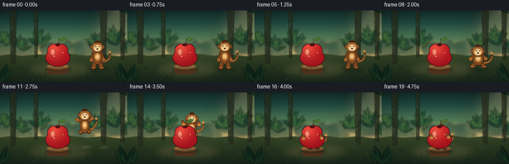
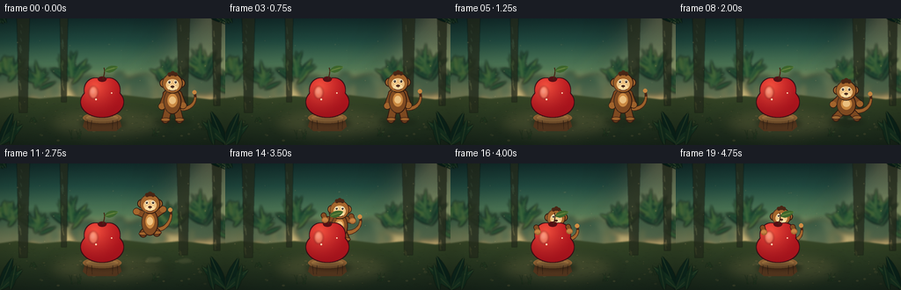
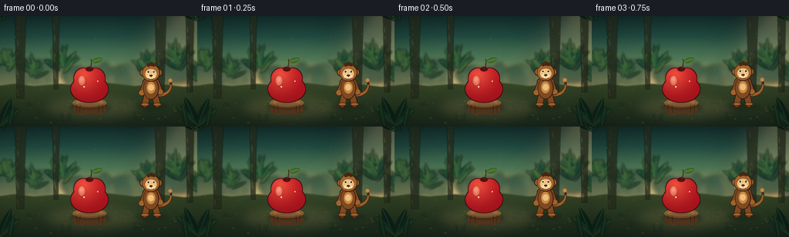

CODING AGENTS AS PIXEL WORLD MODELS
traex/DeepSeek-V4.1-Flash · dynamic_spatial_relationship_0058
点击播放 · 原生 RGB 像素
逐轮保存的候选
回放视频、检查图与代码变化。
每份候选均可单独播放。实际图片检查记录在下方工具轨迹中。
候选 01播放与检查图
点击播放 · 原生 RGB 像素

展开代码变化
--- 上一保存版本
+++ 本次保存版本
@@ -0,0 +1,877 @@
+from pathlib import Path
+
+import numpy as np
+from PIL import Image, ImageDraw, ImageFilter
+
+import artifact_io
+
+
+CASE_DIR = Path(__file__).resolve().parent
+W, H = 256, 144
+S = 4
+RW, RH = W * S, H * S
+FPS = 4
+FRAME_COUNT = 20
+
+
+def pt(x, y):
+ return (x * S, y * S)
+
+
+def sc(value):
+ return value * S
+
+
+def clamp(value, low=0.0, high=1.0):
+ return max(low, min(high, value))
+
+
+def smoothstep(value):
+ value = clamp(value)
+ return value * value * (3.0 - 2.0 * value)
+
+
+def lerp(a, b, t):
+ return a + (b - a) * t
+
+
+def rgba(color, alpha=255):
+ if len(color) == 4:
+ return color
+ return (int(color[0]), int(color[1]), int(color[2]), int(alpha))
+
+
+def vertical_gradient(stops):
+ ys = np.linspace(0.0, 1.0, RH, dtype=np.float32)
+ positions = np.array([item[0] for item in stops], dtype=np.float32)
+ colors = np.array([item[1] for item in stops], dtype=np.float32)
+ out = np.empty((RH, 3), dtype=np.float32)
+ for channel in range(3):
+ out[:, channel] = np.interp(ys, positions, colors[:, channel])
+ out = np.repeat(out[:, None, :], RW, axis=1)
+ return out
+
+
+def image_from_array(array):
+ return Image.fromarray(np.clip(array, 0, 255).astype(np.uint8), "RGB")
+
+
+def capsule(draw, p0, p1, radius, fill, outline=None, outline_width=0):
+ x0, y0 = pt(*p0)
+ x1, y1 = pt(*p1)
+ radius_px = sc(radius)
+ if outline is not None and outline_width:
+ draw.line((x0, y0, x1, y1), fill=outline, width=int(sc(radius + outline_width) * 2))
+ draw.ellipse(
+ (x0 - sc(radius + outline_width), y0 - sc(radius + outline_width),
+ x0 + sc(radius + outline_width), y0 + sc(radius + outline_width)),
+ fill=outline,
+ )
+ draw.ellipse(
+ (x1 - sc(radius + outline_width), y1 - sc(radius + outline_width),
+ x1 + sc(radius + outline_width), y1 + sc(radius + outline_width)),
+ fill=outline,
+ )
+ draw.line((x0, y0, x1, y1), fill=fill, width=int(radius_px * 2))
+ draw.ellipse((x0 - radius_px, y0 - radius_px, x0 + radius_px, y0 + radius_px), fill=fill)
+ draw.ellipse((x1 - radius_px, y1 - radius_px, x1 + radius_px, y1 + radius_px), fill=fill)
+
+
+def tapered_curve(draw, points, widths, fill):
+ for index in range(len(points) - 1):
+ t0 = index / max(1, len(points) - 1)
+ t1 = (index + 1) / max(1, len(points) - 1)
+ radius = lerp(widths[0], widths[1], (t0 + t1) * 0.5)
+ capsule(draw, points[index], points[index + 1], radius, fill)
+
+
+def cubic_bezier(p0, p1, p2, p3, samples=28):
+ p0 = np.asarray(p0, dtype=np.float32)
+ p1 = np.asarray(p1, dtype=np.float32)
+ p2 = np.asarray(p2, dtype=np.float32)
+ p3 = np.asarray(p3, dtype=np.float32)
+ ts = np.linspace(0.0, 1.0, samples, dtype=np.float32)[:, None]
+ points = (
+ (1.0 - ts) ** 3 * p0
+ + 3.0 * (1.0 - ts) ** 2 * ts * p1
+ + 3.0 * (1.0 - ts) * ts ** 2 * p2
+ + ts ** 3 * p3
+ )
+ return [tuple(map(float, point)) for point in points]
+
+
+def leaf_polygon(draw, base, tip, width, fill, vein=None):
+ base = np.asarray(base, dtype=np.float32)
+ tip = np.asarray(tip, dtype=np.float32)
+ direction = tip - base
+ length = float(np.linalg.norm(direction))
+ if length < 1e-3:
+ return
+ direction /= length
+ normal = np.array([-direction[1], direction[0]], dtype=np.float32)
+ us = np.linspace(0.0, 1.0, 19)
+ envelope = np.sin(np.pi * us) ** 0.72 * (0.72 + 0.28 * (1.0 - us))
+ centers = base[None, :] + direction[None, :] * (us[:, None] * length)
+ offsets = normal[None, :] * (envelope[:, None] * width)
+ top = centers + offsets
+ bottom = centers - offsets
+ polygon = np.concatenate([top, bottom[::-1]], axis=0)
+ draw.polygon([(float(x) * S, float(y) * S) for x, y in polygon], fill=fill)
+ if vein is not None:
+ draw.line(
+ (base[0] * S, base[1] * S, tip[0] * S, tip[1] * S),
+ fill=vein,
+ width=max(1, int(S * 0.55)),
+ )
+
+
+def draw_leaf_cluster(layer, rng, center, spread, count, palette, vein=None, blur=0.0):
+ draw = ImageDraw.Draw(layer, "RGBA")
+ cx, cy = center
+ for _ in range(count):
+ angle = rng.uniform(-2.75, -0.38)
+ length = rng.uniform(0.55, 1.0) * spread
+ base = (
+ cx + rng.normal(0.0, spread * 0.16),
+ cy + rng.normal(0.0, spread * 0.12),
+ )
+ tip = (base[0] + np.cos(angle) * length, base[1] + np.sin(angle) * length)
+ color = palette[int(rng.integers(0, len(palette)))]
+ leaf_polygon(draw, base, tip, rng.uniform(2.0, spread * 0.13), rgba(color), vein)
+ if blur > 0:
+ return layer.filter(ImageFilter.GaussianBlur(sc(blur)))
+ return layer
+
+
+def draw_grass(layer, rng, x, y, height, color):
+ draw = ImageDraw.Draw(layer, "RGBA")
+ for _ in range(7):
+ dx = rng.uniform(-5.5, 5.5)
+ bend = rng.uniform(-4.0, 4.0)
+ h = height * rng.uniform(0.55, 1.0)
+ points = cubic_bezier(
+ (x + dx, y),
+ (x + dx + bend * 0.25, y - h * 0.35),
+ (x + dx + bend * 0.75, y - h * 0.72),
+ (x + dx + bend, y - h),
+ samples=8,
+ )
+ draw.line([(px * S, py * S) for px, py in points], fill=rgba(color), width=max(1, int(S * 0.55)))
+
+
+def make_background(rng):
+ stops = [
+ (0.00, (25, 49, 46)),
+ (0.18, (39, 78, 67)),
+ (0.40, (87, 126, 91)),
+ (0.58, (172, 165, 111)),
+ (0.69, (224, 188, 126)),
+ (0.78, (150, 145, 84)),
+ (1.00, (43, 59, 37)),
+ ]
+ base = vertical_gradient(stops)
+ canvas = image_from_array(base).convert("RGBA")
+
+ glow = Image.new("RGBA", (RW, RH), (0, 0, 0, 0))
+ gd = ImageDraw.Draw(glow, "RGBA")
+ gd.ellipse((sc(185), sc(-4), sc(307), sc(105)), fill=(255, 225, 154, 88))
+ glow = glow.filter(ImageFilter.GaussianBlur(sc(24)))
+ canvas = Image.alpha_composite(canvas, glow)
+
+ haze = Image.new("RGBA", (RW, RH), (0, 0, 0, 0))
+ hd = ImageDraw.Draw(haze, "RGBA")
+ hd.ellipse((sc(-30), sc(65), sc(285), sc(112)), fill=(242, 207, 151, 54))
+ haze = haze.filter(ImageFilter.GaussianBlur(sc(10)))
+ canvas = Image.alpha_composite(canvas, haze)
+
+ rays = Image.new("RGBA", (RW, RH), (0, 0, 0, 0))
+ rd = ImageDraw.Draw(rays, "RGBA")
+ rd.polygon(
+ [pt(229, 0), pt(243, 0), pt(158, 104), pt(126, 105)],
+ fill=(255, 239, 187, 25),
+ )
+ rd.polygon(
+ [pt(247, 0), pt(254, 0), pt(203, 97), pt(177, 104)],
+ fill=(255, 236, 176, 18),
+ )
+ rd.polygon(
+ [pt(208, 0), pt(219, 0), pt(101, 109), pt(78, 108)],
+ fill=(255, 236, 176, 13),
+ )
+ rays = rays.filter(ImageFilter.GaussianBlur(sc(7)))
+ canvas = Image.alpha_composite(canvas, rays)
+
+ distant = Image.new("RGBA", (RW, RH), (0, 0, 0, 0))
+ dd = ImageDraw.Draw(distant, "RGBA")
+ for index in range(30):
+ x = rng.uniform(-25, 280)
+ y = rng.uniform(66, 89)
+ width = rng.uniform(18, 47)
+ height = rng.uniform(14, 37)
+ color = (35, 72, 58, int(rng.uniform(110, 180)))
+ dd.ellipse((sc(x - width / 2), sc(y - height / 2), sc(x + width / 2), sc(y + height / 2)), fill=color)
+ for x in (16, 55, 92, 145, 178, 218, 248):
+ trunk = rng.uniform(1.5, 3.0)
+ dd.rectangle((sc(x - trunk), sc(75), sc(x + trunk), sc(104)), fill=(37, 66, 48, 125))
+ distant = distant.filter(ImageFilter.GaussianBlur(sc(2.7)))
+ canvas = Image.alpha_composite(canvas, distant)
+
+ ground_stops = [
+ (0.00, (112, 114, 62)),
+ (0.35, (82, 92, 49)),
+ (0.72, (51, 66, 39)),
+ (1.00, (31, 43, 30)),
+ ]
+ ground_array = vertical_gradient(ground_stops)
+ ground = image_from_array(ground_array).convert("RGBA")
+ mask = Image.new("L", (RW, RH), 0)
+ md = ImageDraw.Draw(mask)
+ md.polygon(
+ [
+ pt(-10, 92), pt(18, 88), pt(45, 91), pt(78, 88), pt(109, 91),
+ pt(141, 87), pt(174, 91), pt(207, 88), pt(239, 92), pt(267, 89),
+ pt(267, 150), pt(-10, 150),
+ ],
+ fill=255,
+ )
+ mask = mask.filter(ImageFilter.GaussianBlur(sc(0.7)))
+ ground.putalpha(mask)
+ canvas = Image.alpha_composite(canvas, ground)
+
+ clearing = Image.new("RGBA", (RW, RH), (0, 0, 0, 0))
+ cd = ImageDraw.Draw(clearing, "RGBA")
+ cd.ellipse((sc(52), sc(99), sc(190), sc(139)), fill=(193, 164, 104, 42))
+ clearing = clearing.filter(ImageFilter.GaussianBlur(sc(8)))
+ canvas = Image.alpha_composite(canvas, clearing)
+
+ mid = Image.new("RGBA", (RW, RH), (0, 0, 0, 0))
+ for x, y, spread, count in [
+ (9, 63, 26, 24), (43, 76, 24, 20), (81, 66, 27, 24),
+ (190, 70, 27, 22), (231, 61, 30, 26), (259, 78, 25, 20),
+ ]:
+ mid = draw_leaf_cluster(
+ mid,
+ rng,
+ (x, y),
+ spread,
+ count,
+ [(25, 61, 46), (34, 76, 50), (48, 92, 55), (68, 103, 57)],
+ vein=(104, 125, 68, 65),
+ )
+ mid = mid.filter(ImageFilter.GaussianBlur(sc(1.2)))
+ canvas = Image.alpha_composite(canvas, mid)
+
+ trunks = Image.new("RGBA", (RW, RH), (0, 0, 0, 0))
+ td = ImageDraw.Draw(trunks, "RGBA")
+ trunk_data = [(27, 0, 8, 107), (73, 0, 5, 95), (209, 0, 8, 104), (247, 0, 6, 99)]
+ for x, top, half, bottom in trunk_data:
+ td.polygon(
+ [pt(x - half, top), pt(x + half * 0.82, top), pt(x + half * 0.52, bottom), pt(x - half * 0.68, bottom)],
+ fill=(43, 48, 32, 202),
+ )
+ for _ in range(10):
+ yy = rng.uniform(6, bottom - 4)
+ x0 = x - half * 0.55 + rng.uniform(-1.0, 1.0)
+ td.line((sc(x0), sc(yy), sc(x0 + rng.uniform(0.4, 2.0)), sc(yy + rng.uniform(3, 8))),
+ fill=(92, 77, 46, 50), width=max(1, int(S * 0.55)))
+ trunks = trunks.filter(ImageFilter.GaussianBlur(sc(0.45)))
+ canvas = Image.alpha_composite(canvas, trunks)
+
+ details = Image.new("RGBA", (RW, RH), (0, 0, 0, 0))
+ dt = ImageDraw.Draw(details, "RGBA")
+ for _ in range(220):
+ x = rng.uniform(3, 253)
+ y = rng.uniform(96, 140)
+ length = rng.uniform(1.0, 4.2)
+ color = (57, 73, 40, int(rng.uniform(35, 85)))
+ dt.line((sc(x), sc(y), sc(x + length), sc(y + rng.uniform(-1.2, 1.2))),
+ fill=color, width=max(1, int(S * 0.45)))
+ for _ in range(48):
+ x = rng.uniform(8, 248)
+ y = rng.uniform(101, 139)
+ rx = rng.uniform(0.7, 2.2)
+ ry = rx * rng.uniform(0.4, 0.8)
+ dt.ellipse((sc(x - rx), sc(y - ry), sc(x + rx), sc(y + ry)),
+ fill=(117, 107, 67, int(rng.uniform(35, 75))))
+ for x, y, height in [(20, 126, 10), (38, 118, 8), (86, 137, 12), (176, 134, 10), (235, 127, 12)]:
+ draw_grass(details, rng, x, y, height, (41, 77, 43, 170))
+ details = details.filter(ImageFilter.GaussianBlur(sc(0.28)))
+ canvas = Image.alpha_composite(canvas, details)
+
+ pollen = Image.new("RGBA", (RW, RH), (0, 0, 0, 0))
+ pd = ImageDraw.Draw(pollen, "RGBA")
+ for _ in range(56):
+ x = rng.uniform(4, 252)
+ y = rng.uniform(20, 126)
+ radius = rng.uniform(0.25, 0.95)
+ alpha = int(rng.uniform(16, 55))
+ pd.ellipse((sc(x - radius), sc(y - radius), sc(x + radius), sc(y + radius)),
+ fill=(255, 226, 158, alpha))
+ pollen = pollen.filter(ImageFilter.GaussianBlur(sc(0.38)))
+ canvas = Image.alpha_composite(canvas, pollen)
+
+ return canvas.convert("RGB")
+
+
+def make_foreground(rng):
+ layer = Image.new("RGBA", (RW, RH), (0, 0, 0, 0))
+ draw = ImageDraw.Draw(layer, "RGBA")
+ for base, angle, length, width, color in [
+ ((0, 143), -1.18, 39, 5.7, (19, 42, 31, 240)),
+ ((0, 144), -0.73, 35, 4.8, (27, 55, 36, 230)),
+ ((12, 144), -1.36, 30, 4.2, (23, 49, 32, 220)),
+ ((256, 144), -1.97, 42, 6.1, (17, 39, 29, 242)),
+ ((256, 142), -2.38, 36, 5.0, (27, 55, 35, 232)),
+ ((243, 144), -1.78, 31, 4.3, (23, 48, 32, 224)),
+ ]:
+ tip = (base[0] + np.cos(angle) * length, base[1] + np.sin(angle) * length)
+ leaf_polygon(draw, base, tip, width, color, vein=(80, 101, 59, 80))
+ for center, spread, count in [((0, 2), 30, 19), ((256, 2), 32, 20)]:
+ layer = draw_leaf_cluster(
+ layer,
+ rng,
+ center,
+ spread,
+ count,
+ [(15, 37, 28), (22, 47, 32), (31, 58, 37)],
+ vein=(73, 91, 53, 65),
+ )
+ return layer.filter(ImageFilter.GaussianBlur(sc(0.35)))
+
+
+def draw_stump(layer, rng):
+ draw = ImageDraw.Draw(layer, "RGBA")
+ shadow = Image.new("RGBA", (RW, RH), (0, 0, 0, 0))
+ sd = ImageDraw.Draw(shadow, "RGBA")
+ sd.ellipse((sc(91), sc(113), sc(143), sc(125)), fill=(19, 24, 17, 92))
+ shadow = shadow.filter(ImageFilter.GaussianBlur(sc(2.8)))
+ layer = Image.alpha_composite(layer, shadow)
+
+ draw = ImageDraw.Draw(layer, "RGBA")
+ draw.polygon(
+ [pt(97, 112), pt(135, 112), pt(138, 123), pt(132, 128), pt(100, 128), pt(94, 123)],
+ fill=(86, 57, 33, 255),
+ )
+ draw.ellipse((sc(94), sc(107), sc(138), sc(119)), fill=(145, 101, 56, 255))
+ draw.ellipse((sc(98), sc(109), sc(134), sc(117)), fill=(176, 128, 73, 255))
+ for radius in (12, 8, 4):
+ draw.arc(
+ (sc(116 - radius), sc(110 - radius * 0.25), sc(116 + radius), sc(114 + radius * 0.25)),
+ 185,
+ 355,
+ fill=(111, 75, 43, 145),
+ width=max(1, int(S * 0.65)),
+ )
+ for x in (99, 104, 128, 133):
+ draw.line((sc(x), sc(116), sc(x + rng.uniform(-1.2, 1.2)), sc(126)),
+ fill=(52, 37, 24, 105), width=max(1, int(S * 0.65)))
+ return layer
+
+
+def draw_apple(layer):
+ # A soft contact shadow helps the apple feel planted on the stump.
+ shadow = Image.new("RGBA", (RW, RH), (0, 0, 0, 0))
+ sd = ImageDraw.Draw(shadow, "RGBA")
+ sd.ellipse((sc(96), sc(111), sc(136), sc(120)), fill=(29, 21, 17, 88))
+ shadow = shadow.filter(ImageFilter.GaussianBlur(sc(2.0)))
+ layer = Image.alpha_composite(layer, shadow)
+
+ cx, cy = 116.0, 90.0
+ mask = Image.new("L", (RW, RH), 0)
+ md = ImageDraw.Draw(mask)
+ md.ellipse((sc(cx - 24), sc(cy - 12), sc(cx + 24), sc(cy + 22)), fill=255)
+ md.ellipse((sc(cx - 20), sc(cy - 22), sc(cx + 5), sc(cy + 5)), fill=255)
+ md.ellipse((sc(cx - 5), sc(cy - 22), sc(cx + 20), sc(cy + 5)), fill=255)
+ mask = mask.filter(ImageFilter.GaussianBlur(sc(0.22)))
+
+ yy, xx = np.mgrid[0:RH, 0:RW].astype(np.float32)
+ nx = (xx / S - cx) / 26.0
+ ny = (yy / S - cy) / 27.0
+ distance = np.sqrt((nx + 0.32) ** 2 + (ny + 0.45) ** 2)
+ highlight = np.clip(1.0 - distance / 1.28, 0.0, 1.0) ** 1.45
+ vertical = np.clip((yy / S - (cy - 22)) / 45.0, 0.0, 1.0)
+ dark = np.array([91, 13, 24], dtype=np.float32)
+ red = np.array([181, 28, 34], dtype=np.float32)
+ bright = np.array([244, 87, 68], dtype=np.float32)
+ apple = red[None, None, :] + (bright - red)[None, None, :] * highlight[:, :, None]
+ apple = apple * (1.0 - 0.22 * vertical[:, :, None]) + dark[None, None, :] * (0.22 * vertical[:, :, None])
+ apple_img = Image.fromarray(np.clip(apple, 0, 255).astype(np.uint8), "RGB").convert("RGBA")
+
+ outline_mask = mask.filter(ImageFilter.MaxFilter(int(sc(0.9)) * 2 + 1))
+ outline = Image.new("RGBA", (RW, RH), (54, 15, 21, 255))
+ outline.putalpha(outline_mask)
+ layer = Image.alpha_composite(layer, outline)
+ apple_img.putalpha(mask)
+ layer = Image.alpha_composite(layer, apple_img)
+
+ draw = ImageDraw.Draw(layer, "RGBA")
+ # Crisp but restrained specular highlights.
+ shine = Image.new("RGBA", (RW, RH), (0, 0, 0, 0))
+ shd = ImageDraw.Draw(shine, "RGBA")
+ shd.ellipse((sc(101), sc(77), sc(111), sc(91)), fill=(255, 184, 144, 118))
+ shd.ellipse((sc(103), sc(79), sc(108), sc(86)), fill=(255, 225, 196, 125))
+ shine = shine.filter(ImageFilter.GaussianBlur(sc(1.0)))
+ layer = Image.alpha_composite(layer, shine)
+
+ draw = ImageDraw.Draw(layer, "RGBA")
+ draw.ellipse((sc(111), sc(66), sc(121), sc(72)), fill=(88, 21, 24, 205))
+ stem_points = cubic_bezier((117, 69), (118, 64), (120, 60), (118, 56), samples=14)
+ draw.line([(x * S, y * S) for x, y in stem_points], fill=(73, 43, 25, 255), width=int(sc(1.35)))
+ leaf_polygon(draw, (119, 60), (134, 55), 4.2, (65, 103, 48, 255), vein=(125, 146, 75, 165))
+ draw.line((sc(121), sc(58.5), sc(130), sc(56.2)), fill=(173, 185, 94, 120), width=max(1, int(S * 0.45)))
+
+ # Tiny droplets catch the warm light.
+ draw.ellipse((sc(108), sc(91), sc(110), sc(93)), fill=(255, 210, 179, 150))
+ draw.ellipse((sc(126), sc(84), sc(127.5), sc(85.5)), fill=(255, 218, 186, 120))
+ return layer
+
+
+def draw_monkey_shadow(canvas, pose):
+ height = max(0.0, 112.0 - pose["y"])
+ alpha = int(clamp(86.0 - height * 1.25, 18.0, 86.0))
+ width = 18.0 + height * 0.18
+ shadow = Image.new("RGBA", (RW, RH), (0, 0, 0, 0))
+ draw = ImageDraw.Draw(shadow, "RGBA")
+ draw.ellipse(
+ (sc(pose["x"] - width), sc(114), sc(pose["x"] + width), sc(121)),
+ fill=(20, 22, 16, alpha),
+ )
+ shadow = shadow.filter(ImageFilter.GaussianBlur(sc(2.4)))
+ return Image.alpha_composite(canvas, shadow)
+
+
+def draw_monkey(pose, frame):
+ layer = Image.new("RGBA", (RW, RH), (0, 0, 0, 0))
+ draw = ImageDraw.Draw(layer, "RGBA")
+ cx, cy = pose["x"], pose["y"]
+ scale = pose["scale"]
+ sx = pose["sx"] * scale
+ sy = pose["sy"] * scale
+
+ def mp(x, y):
+ return (cx + x * sx, cy + y * sy)
+
+ fur_dark = (78, 43, 25, 255)
+ outline = (57, 32, 20, 255)
+ fur = (132, 79, 38, 255)
+ fur_mid = (163, 103, 49, 255)
+ fur_light = (202, 139, 71, 255)
+ face = (232, 192, 132, 255)
+ face_light = (248, 218, 164, 255)
+ ink = (44, 27, 20, 255)
+
+ # Tail, animated independently from the body.
+ tail_phase = pose.get("tail_phase", 0.0)
+ tail = cubic_bezier(
+ mp(7, 11),
+ mp(19, 14 + 2.0 * np.sin(tail_phase)),
+ mp(29, 3 + 3.0 * np.sin(tail_phase + 0.8)),
+ mp(25, -9 + 2.0 * np.sin(tail_phase + 1.6)),
+ samples=22,
+ )
+ tapered_curve(draw, tail, (2.8, 1.2), fur_dark)
+ tapered_curve(draw, tail[:-4], (2.0, 0.9), fur_mid)
+ tip = tail[-1]
+ draw.ellipse((sc(tip[0] - 2.4), sc(tip[1] - 2.4), sc(tip[0] + 2.4), sc(tip[1] + 2.4)), fill=fur_light)
+
+ hip_l, hip_r = mp(-5, 12), mp(5, 12)
+ foot_l, foot_r = mp(*pose["foot_l"]), mp(*pose["foot_r"])
+ capsule(draw, hip_l, foot_l, 3.7 * scale, fur, outline, 1.0 * scale)
+ capsule(draw, hip_r, foot_r, 3.7 * scale, fur, outline, 1.0 * scale)
+ for foot in (foot_l, foot_r):
+ draw.ellipse(
+ (sc(foot[0] - 5.2 * scale), sc(foot[1] - 2.2 * scale),
+ sc(foot[0] + 5.6 * scale), sc(foot[1] + 2.6 * scale)),
+ fill=fur_dark,
+ )
+ draw.ellipse(
+ (sc(foot[0] - 4.3 * scale), sc(foot[1] - 1.5 * scale),
+ sc(foot[0] + 4.6 * scale), sc(foot[1] + 1.5 * scale)),
+ fill=fur_mid,
+ )
+
+ shoulder_l, shoulder_r = mp(-7, -5), mp(7, -5)
+ hand_l, hand_r = mp(*pose["hand_l"]), mp(*pose["hand_r"])
+ capsule(draw, shoulder_l, hand_l, 3.2 * scale, fur, outline, 0.9 * scale)
+ capsule(draw, shoulder_r, hand_r, 3.2 * scale, fur, outline, 0.9 * scale)
+ for hand in (hand_l, hand_r):
+ draw.ellipse(
+ (sc(hand[0] - 3.6 * scale), sc(hand[1] - 3.4 * scale),
+ sc(hand[0] + 3.6 * scale), sc(hand[1] + 3.4 * scale)),
+ fill=fur_mid,
+ )
+
+ torso_box = (
+ sc(cx - 9.2 * sx), sc(cy - 10.2 * sy),
+ sc(cx + 9.2 * sx), sc(cy + 16.8 * sy),
+ )
+ draw.ellipse(
+ (torso_box[0] - sc(1.0 * scale), torso_box[1] - sc(1.0 * scale),
+ torso_box[2] + sc(1.0 * scale), torso_box[3] + sc(1.0 * scale)),
+ fill=outline,
+ )
+ draw.ellipse(torso_box, fill=fur)
+ chest_box = (
+ sc(cx - 5.6 * sx), sc(cy - 5.3 * sy),
+ sc(cx + 5.6 * sx), sc(cy + 10.0 * sy),
+ )
+ draw.ellipse(chest_box, fill=fur_light)
+ draw.ellipse(
+ (sc(cx - 3.8 * sx), sc(cy - 2.2 * sy), sc(cx + 3.8 * sx), sc(cy + 6.3 * sy)),
+ fill=face,
+ )
+
+ head_x, head_y = pose["head"]
+ head_center = mp(head_x, head_y)
+ head_rx = 10.7 * scale
+ head_ry = 10.3 * scale
+ for side in (-1, 1):
+ ear_center = (head_center[0] + side * 9.5 * scale, head_center[1] - 0.4 * scale)
+ draw.ellipse(
+ (sc(ear_center[0] - 5.1 * scale), sc(ear_center[1] - 5.2 * scale),
+ sc(ear_center[0] + 5.1 * scale), sc(ear_center[1] + 5.2 * scale)),
+ fill=outline,
+ )
+ draw.ellipse(
+ (sc(ear_center[0] - 4.1 * scale), sc(ear_center[1] - 4.2 * scale),
+ sc(ear_center[0] + 4.1 * scale), sc(ear_center[1] + 4.2 * scale)),
+ fill=fur_mid,
+ )
+ draw.ellipse(
+ (sc(ear_center[0] - 2.2 * scale), sc(ear_center[1] - 2.2 * scale),
+ sc(ear_center[0] + 2.2 * scale), sc(ear_center[1] + 2.2 * scale)),
+ fill=(199, 137, 89, 255),
+ )
+ draw.ellipse(
+ (sc(head_center[0] - head_rx - 1.0 * scale), sc(head_center[1] - head_ry - 1.0 * scale),
+ sc(head_center[0] + head_rx + 1.0 * scale), sc(head_center[1] + head_ry + 1.0 * scale)),
+ fill=outline,
+ )
+ draw.ellipse(
+ (sc(head_center[0] - head_rx), sc(head_center[1] - head_ry),
+ sc(head_center[0] + head_rx), sc(head_center[1] + head_ry)),
+ fill=fur_mid,
+ )
+ draw.ellipse(
+ (sc(head_center[0] - 7.4 * scale), sc(head_center[1] - 4.8 * scale),
+ sc(head_center[0] + 7.4 * scale), sc(head_center[1] + 8.0 * scale)),
+ fill=face,
+ )
+ draw.ellipse(
+ (sc(head_center[0] - 5.4 * scale), sc(head_center[1] + 1.6 * scale),
+ sc(head_center[0] + 5.4 * scale), sc(head_center[1] + 8.5 * scale)),
+ fill=face_light,
+ )
+ # A small fur crest.
+ for dx, dy, radius in [(-3.2, -10.3, 2.4), (0.2, -11.5, 2.7), (3.5, -10.4, 2.3)]:
+ hx = head_center[0] + dx * scale
+ hy = head_center[1] + dy * scale
+ draw.ellipse((sc(hx - radius * scale), sc(hy - radius * scale),
+ sc(hx + radius * scale), sc(hy + radius * scale)), fill=fur_dark)
+
+ blink = frame in (4, 17)
+ eye_y = head_center[1] - 1.5 * scale
+ for side in (-1, 1):
+ eye_x = head_center[0] + side * 3.6 * scale
+ if blink:
+ draw.line(
+ (sc(eye_x - 2.0 * scale), sc(eye_y), sc(eye_x + 2.0 * scale), sc(eye_y)),
+ fill=ink,
+ width=max(1, int(S * 1.05 * scale)),
+ )
+ else:
+ draw.ellipse(
+ (sc(eye_x - 1.8 * scale), sc(eye_y - 2.3 * scale),
+ sc(eye_x + 1.8 * scale), sc(eye_y + 2.0 * scale)),
+ fill=(250, 238, 206, 255),
+ )
+ draw.ellipse(
+ (sc(eye_x - 1.1 * scale), sc(eye_y - 1.3 * scale),
+ sc(eye_x + 1.1 * scale), sc(eye_y + 1.4 * scale)),
+ fill=ink,
+ )
+ draw.ellipse(
+ (sc(eye_x - 0.45 * scale), sc(eye_y - 0.9 * scale),
+ sc(eye_x + 0.3 * scale), sc(eye_y - 0.1 * scale)),
+ fill=(255, 249, 229, 255),
+ )
+ nose_y = head_center[1] + 3.5 * scale
+ draw.ellipse(
+ (sc(head_center[0] - 2.2 * scale), sc(nose_y - 1.1 * scale),
+ sc(head_center[0] + 2.2 * scale), sc(nose_y + 1.3 * scale)),
+ fill=(95, 55, 37, 255),
+ )
+ draw.ellipse((sc(head_center[0] - 1.3 * scale), sc(nose_y - 0.2 * scale),
+ sc(head_center[0] - 0.4 * scale), sc(nose_y + 0.5 * scale)), fill=(43, 29, 23, 255))
+ draw.ellipse((sc(head_center[0] + 0.4 * scale), sc(nose_y - 0.2 * scale),
+ sc(head_center[0] + 1.3 * scale), sc(nose_y + 0.5 * scale)), fill=(43, 29, 23, 255))
+ draw.arc(
+ (sc(head_center[0] - 4.4 * scale), sc(head_center[1] + 4.3 * scale),
+ sc(head_center[0] + 4.4 * scale), sc(head_center[1] + 8.7 * scale)),
+ 12,
+ 168,
+ fill=(89, 47, 35, 255),
+ width=max(1, int(S * 0.8 * scale)),
+ )
+ draw.line(
+ (sc(head_center[0]), sc(head_center[1] + 5.0 * scale),
+ sc(head_center[0]), sc(head_center[1] + 6.1 * scale)),
+ fill=(113, 69, 48, 170),
+ width=max(1, int(S * 0.55)),
+ )
+
+ # Warm rim light from the sunlit background.
+ rim = Image.new("RGBA", (RW, RH), (0, 0, 0, 0))
+ rd = ImageDraw.Draw(rim, "RGBA")
+ rd.arc(
+ (sc(head_center[0] - head_rx - 0.8), sc(head_center[1] - head_ry - 0.8),
+ sc(head_center[0] + head_rx + 0.8), sc(head_center[1] + head_ry + 0.8)),
+ 112,
+ 245,
+ fill=(255, 208, 128, 104),
+ width=max(1, int(S * 0.9)),
+ )
+ rd.arc(
+ (torso_box[0] - sc(0.7), torso_box[1] - sc(0.7), torso_box[2] + sc(0.7), torso_box[3] + sc(0.7)),
+ 112,
+ 235,
+ fill=(255, 205, 124, 76),
+ width=max(1, int(S * 0.8)),
+ )
+ rim = rim.filter(ImageFilter.GaussianBlur(sc(0.25)))
+ layer = Image.alpha_composite(layer, rim)
+ return layer
+
+
+def draw_grip_hands(layer, pose):
+ draw = ImageDraw.Draw(layer, "RGBA")
+ cx, cy = pose["x"], pose["y"]
+ scale = pose["scale"]
+ for rel_x, rel_y in (pose["hand_l"], pose["hand_r"]):
+ x = cx + rel_x * pose["sx"] * scale
+ y = cy + rel_y * pose["sy"] * scale
+ # Forearm edge just above the hand sells the hug behind the apple.
+ capsule(draw, (x - 1.5, y - 5.0), (x, y - 1.0), 2.7 * scale, (132, 79, 38, 255), (57, 32, 20, 255), 0.8 * scale)
+ draw.ellipse(
+ (sc(x - 4.0 * scale), sc(y - 3.5 * scale), sc(x + 4.0 * scale), sc(y + 3.8 * scale)),
+ fill=(163, 103, 49, 255),
+ )
+ draw.ellipse(
+ (sc(x - 3.1 * scale), sc(y - 2.5 * scale), sc(x + 3.1 * scale), sc(y + 2.6 * scale)),
+ fill=(196, 130, 70, 255),
+ )
+ for finger in (-1.7, 0.0, 1.7):
+ draw.line(
+ (sc(x + finger * scale), sc(y + 1.0 * scale),
+ sc(x + (finger - 0.3) * scale), sc(y + 3.2 * scale)),
+ fill=(103, 58, 35, 210),
+ width=max(1, int(S * 0.48)),
+ )
+ return layer
+
+
+def draw_dust(canvas, frame):
+ layer = Image.new("RGBA", (RW, RH), (0, 0, 0, 0))
+ draw = ImageDraw.Draw(layer, "RGBA")
+ if 7 <= frame <= 11:
+ progress = (frame - 7) / 4.0
+ for index in range(9):
+ side = -1 if index % 2 == 0 else 1
+ x = 192.0 + side * (5 + 13 * progress) + (index - 4) * 1.3
+ y = 114.0 - progress * (3 + index % 3) + (index % 2) * 1.2
+ radius = 1.3 + progress * (3.2 + (index % 3) * 0.5)
+ alpha = int(80 * (1.0 - progress * 0.65))
+ draw.ellipse((sc(x - radius), sc(y - radius * 0.55), sc(x + radius), sc(y + radius * 0.55)),
+ fill=(223, 202, 150, alpha))
+ if 15 <= frame <= 19:
+ progress = (frame - 15) / 4.0
+ for index in range(8):
+ side = -1 if index % 2 == 0 else 1
+ x = 116.0 + side * (10 + 12 * progress) + (index - 3.5) * 1.1
+ y = 116.0 - progress * (2 + index % 2) + (index % 2) * 0.8
+ radius = 1.0 + progress * (2.6 + (index % 3) * 0.35)
+ alpha = int(62 * (1.0 - progress * 0.7))
+ draw.ellipse((sc(x - radius), sc(y - radius * 0.5), sc(x + radius), sc(y + radius * 0.5)),
+ fill=(220, 196, 145, alpha))
+ if frame < 7 or frame > 19:
+ return canvas
+ layer = layer.filter(ImageFilter.GaussianBlur(sc(1.2)))
+ return Image.alpha_composite(canvas, layer)
+
+
+def draw_ambient_motes(canvas, frame):
+ t = frame / FPS
+ layer = Image.new("RGBA", (RW, RH), (0, 0, 0, 0))
+ draw = ImageDraw.Draw(layer, "RGBA")
+ for index in range(18):
+ phase = index * 1.618
+ x = 17 + (index * 37) % 223 + 3.2 * np.sin(t * 0.62 + phase)
+ y = 32 + (index * 29) % 87 - 2.6 * np.cos(t * 0.46 + phase * 1.3)
+ radius = 0.35 + (index % 4) * 0.17
+ alpha = int(24 + 16 * (0.5 + 0.5 * np.sin(t * 0.8 + phase)))
+ draw.ellipse((sc(x - radius), sc(y - radius), sc(x + radius), sc(y + radius)),
+ fill=(255, 225, 154, alpha))
+ layer = layer.filter(ImageFilter.GaussianBlur(sc(0.55)))
+ return Image.alpha_composite(canvas, layer)
+
+
+def grade_and_finish(canvas, frame):
+ array = np.asarray(canvas.convert("RGB"), dtype=np.float32) / 255.0
+ # Gentle cinematic S-curve and split-toning.
+ array = np.clip((array - 0.5) * 1.06 + 0.5, 0.0, 1.0)
+ luma = array @ np.array([0.2126, 0.7152, 0.0722], dtype=np.float32)
+ warm_highlights = np.array([0.022, 0.009, -0.008], dtype=np.float32)
+ cool_shadows = np.array([-0.006, 0.003, 0.013], dtype=np.float32)
+ array += warm_highlights[None, None, :] * (luma[:, :, None] ** 1.6)
+ array += cool_shadows[None, None, :] * ((1.0 - luma[:, :, None]) ** 1.7)
+
+ yy, xx = np.mgrid[0:RH, 0:RW].astype(np.float32)
+ nx = (xx / RW - 0.5) * 2.0
+ ny = (yy / RH - 0.5) * 2.0
+ vignette = np.clip(1.0 - 0.17 * (nx * nx * 0.72 + ny * ny * 0.52) ** 1.2, 0.78, 1.0)
+ array *= vignette[:, :, None]
+
+ # Very light grain prevents the broad gradients from banding after downsampling.
+ rng = np.random.default_rng(1000 + frame)
+ grain = rng.normal(0.0, 0.0026, size=(RH, RW, 1)).astype(np.float32)
+ array = np.clip(array + grain, 0.0, 1.0)
+ small = Image.fromarray((array * 255.0 + 0.5).astype(np.uint8), "RGB")
+ return small.resize((W, H), Image.Resampling.LANCZOS)
+
+
+def catmull_rom(p0, p1, p2, p3, t):
+ t2 = t * t
+ t3 = t2 * t
+ return 0.5 * (
+ (2.0 * p1)
+ + (-p0 + p2) * t
+ + (2.0 * p0 - 5.0 * p1 + 4.0 * p2 - p3) * t2
+ + (-p0 + 3.0 * p1 - 3.0 * p2 + p3) * t3
+ )
+
+
+KEYFRAMES = [
+ {
+ "frame": 0,
+ "x": 196.0, "y": 91.0, "scale": 1.0, "sx": 1.0, "sy": 1.0,
+ "head": (0.0, -17.0), "hand_l": (-12.0, 9.0), "hand_r": (12.0, 8.0),
+ "foot_l": (-8.0, 24.0), "foot_r": (8.0, 24.0), "tail_phase": 0.0,
+ },
+ {
+ "frame": 5,
+ "x": 196.0, "y": 90.4, "scale": 1.0, "sx": 1.01, "sy": 0.99,
+ "head": (0.2, -17.2), "hand_l": (-12.2, 8.8), "hand_r": (12.0, 8.0),
+ "foot_l": (-8.0, 24.0), "foot_r": (8.0, 24.0), "tail_phase": 1.1,
+ },
+ {
+ "frame": 8,
+ "x": 194.0, "y": 95.0, "scale": 1.0, "sx": 1.08, "sy": 0.88,
+ "head": (-0.4, -14.6), "hand_l": (-14.0, 3.2), "hand_r": (14.2, 2.6),
+ "foot_l": (-11.0, 20.0), "foot_r": (11.0, 20.0), "tail_phase": 2.3,
+ },
+ {
+ "frame": 10,
+ "x": 184.0, "y": 77.0, "scale": 1.0, "sx": 0.94, "sy": 1.06,
+ "head": (0.0, -17.0), "hand_l": (-16.0, -5.0), "hand_r": (15.0, -7.0),
+ "foot_l": (-8.0, 19.0), "foot_r": (8.0, 18.0), "tail_phase": 3.5,
+ },
+ {
+ "frame": 12,
+ "x": 155.0, "y": 54.0, "scale": 0.97, "sx": 0.95, "sy": 1.04,
+ "head": (0.0, -16.0), "hand_l": (-17.0, -10.0), "hand_r": (17.0, -12.0),
+ "foot_l": (-9.0, 13.0), "foot_r": (9.0, 12.0), "tail_phase": 4.5,
+ },
+ {
+ "frame": 14,
+ "x": 130.0, "y": 68.0, "scale": 0.94, "sx": 0.98, "sy": 1.02,
+ "head": (0.0, -16.0), "hand_l": (-18.0, -4.0), "hand_r": (16.0, -3.0),
+ "foot_l": (-8.0, 20.0), "foot_r": (8.0, 19.0), "tail_phase": 5.4,
+ },
+ {
+ "frame": 16,
+ "x": 120.0, "y": 92.0, "scale": 0.90, "sx": 1.06, "sy": 0.94,
+ "head": (0.0, -16.0), "hand_l": (-22.0, 1.0), "hand_r": (16.0, 0.0),
+ "foot_l": (-8.0, 22.0), "foot_r": (8.0, 22.0), "tail_phase": 6.2,
+ },
+ {
+ "frame": 19,
+ "x": 120.0, "y": 90.5, "scale": 0.90, "sx": 1.0, "sy": 1.0,
+ "head": (0.0, -16.2), "hand_l": (-22.0, 1.0), "hand_r": (16.0, 0.0),
+ "foot_l": (-8.0, 23.0), "foot_r": (8.0, 23.0), "tail_phase": 6.8,
+ },
+]
+
+
+def interpolate_pose(frame):
+ if frame <= KEYFRAMES[0]["frame"]:
+ return dict(KEYFRAMES[0])
+ if frame >= KEYFRAMES[-1]["frame"]:
+ return dict(KEYFRAMES[-1])
+ segment = 0
+ for index in range(len(KEYFRAMES) - 1):
+ if KEYFRAMES[index]["frame"] <= frame <= KEYFRAMES[index + 1]["frame"]:
+ segment = index
+ break
+ k0 = KEYFRAMES[max(0, segment - 1)]
+ k1 = KEYFRAMES[segment]
+ k2 = KEYFRAMES[segment + 1]
+ k3 = KEYFRAMES[min(len(KEYFRAMES) - 1, segment + 2)]
+ t = (frame - k1["frame"]) / (k2["frame"] - k1["frame"])
+
+ pose = {}
+ for key in ("x", "y", "scale", "sx", "sy", "tail_phase"):
+ pose[key] = catmull_rom(k0[key], k1[key], k2[key], k3[key], t)
+ for key in ("head", "hand_l", "hand_r", "foot_l", "foot_r"):
+ pose[key] = (
+ catmull_rom(k0[key][0], k1[key][0], k2[key][0], k3[key][0], t),
+ catmull_rom(k0[key][1], k1[key][1], k2[key][1], k3[key][1], t),
+ )
+ if frame >= 16:
+ pose["y"] = max(90.5, pose["y"])
+ return pose
+
+
+def render_frames():
+ rng = np.random.default_rng(481516)
+ background = make_background(rng)
+ foreground = make_foreground(rng)
+ frames = []
+
+ for frame in range(FRAME_COUNT):
+ pose = interpolate_pose(frame)
+ canvas = background.copy().convert("RGBA")
+ canvas = draw_stump(canvas, rng)
+ canvas = draw_monkey_shadow(canvas, pose)
+ canvas = draw_ambient_motes(canvas, frame)
+
+ behind_apple = frame >= 14
+ monkey = draw_monkey(pose, frame)
+ if behind_apple:
+ canvas = Image.alpha_composite(canvas, monkey)
+ canvas = draw_apple(canvas)
+ canvas = draw_grip_hands(canvas, pose)
+ else:
+ canvas = draw_apple(canvas)
+ canvas = Image.alpha_composite(canvas, monkey)
+
+ canvas = draw_dust(canvas, frame)
+
+ # A tiny foreground sway adds depth without moving the camera.
+ sway = int(round(np.sin(frame * 0.52) * sc(0.55)))
+ fg_shifted = Image.new("RGBA", (RW, RH), (0, 0, 0, 0))
+ fg_shifted.alpha_composite(foreground, (sway, 0))
+ canvas = Image.alpha_composite(canvas, fg_shifted)
+
+ finished = grade_and_finish(canvas, frame)
+ frames.append(np.asarray(finished, dtype=np.uint8))
+ return np.stack(frames, axis=0)
+
+
+def main():
+ frames = render_frames()
+ artifact_io.save(frames, CASE_DIR)
+ print(f"saved {frames.shape} RGB frames to {CASE_DIR}")
+
+
+if __name__ == "__main__":
+ main()
候选 02播放与检查图
点击播放 · 原生 RGB 像素


展开代码变化
--- 上一保存版本
+++ 本次保存版本
@@ -789,14 +789,14 @@
},
{
"frame": 16,
- "x": 120.0, "y": 92.0, "scale": 0.90, "sx": 1.06, "sy": 0.94,
- "head": (0.0, -16.0), "hand_l": (-22.0, 1.0), "hand_r": (16.0, 0.0),
+ "x": 120.0, "y": 77.0, "scale": 0.90, "sx": 1.06, "sy": 0.94,
+ "head": (0.0, -18.0), "hand_l": (-22.0, 1.0), "hand_r": (16.0, 0.0),
"foot_l": (-8.0, 22.0), "foot_r": (8.0, 22.0), "tail_phase": 6.2,
},
{
"frame": 19,
- "x": 120.0, "y": 90.5, "scale": 0.90, "sx": 1.0, "sy": 1.0,
- "head": (0.0, -16.2), "hand_l": (-22.0, 1.0), "hand_r": (16.0, 0.0),
+ "x": 120.0, "y": 77.2, "scale": 0.90, "sx": 1.0, "sy": 1.0,
+ "head": (0.0, -18.2), "hand_l": (-22.0, 1.0), "hand_r": (16.0, 0.0),
"foot_l": (-8.0, 23.0), "foot_r": (8.0, 23.0), "tail_phase": 6.8,
},
]
@@ -827,7 +827,7 @@
catmull_rom(k0[key][1], k1[key][1], k2[key][1], k3[key][1], t),
)
if frame >= 16:
- pose["y"] = max(90.5, pose["y"])
+ pose["y"] = max(77.0, pose["y"])
return pose
可观测工具轨迹
实际执行的命令与返回图片。
命令 1exit 0
/bin/bash -c "pwd && rg --files -g 'prompt.txt' -g 'GENERATION_RULES.md' -g 'task_spec.json' -g '"'!node_modules'"'"
命令 2exit 0
/bin/bash -c 'ls -la && find . -maxdepth 2 -type f | sort | head -200'
命令 3exit 0
/bin/bash -c 'cat prompt.txt'
命令 4exit 0
/bin/bash -c 'cat GENERATION_RULES.md'
命令 5exit 0
/bin/bash -c "cat task_spec.json && printf '\\n--- artifact_io.py ---\\n' && sed -n '1,260p' artifact_io.py"
命令 6exit 0
/bin/bash -c "command -v ffmpeg; command -v blender; command -v python3; python3 - <<'PY' mods=['PIL','numpy','cv2','imageio','matplotlib','cairo','moderngl','trimesh','scipy'] for m in mods: try: __import__(m); print(m,'OK') except Exception as e: print(m,'NO',type(e).__name__) PY"
命令 7exit 0
/bin/bash -c 'MPLCONFIGDIR=.tmp python3 generate.py'
命令 8exit 1
/bin/bash -c 'command -v chafa; command -v viu; command -v jp2; command -v ffmpeg; command -v img2txt; command -v convert'
命令 9exit 0
/bin/bash -c "python3 - <<'PY'
from PIL import Image
import numpy as np
for f in ['frames/00.png','frames/05.png','frames/10.png','frames/14.png','frames/16.png','frames/19.png']:
im=np.asarray(Image.open(f).convert('RGB'))
print(f, 'mean', im.mean((0,1)).round(1), 'std', im.std((0,1)).round(1), 'unique',len(np.unique(im.reshape(-1,3),axis=0)))
PY"命令 10exit 0
/bin/bash -c 'ls -lh frames inspection.png transition_check.png pixels.npz index.html generate.py && git status --short'
命令 11exit 0
/bin/bash -c "sed -n '1,260p' player_template.html"
命令 12exit 0
/bin/bash -c "python3 - <<'PY'
from PIL import Image
im=Image.open('frames/00.png').convert('RGB').resize((64,36),Image.Resampling.LANCZOS)
for y in range(0,36,2):
s=''
for x in range(64):
a=im.getpixel((x,y)); b=im.getpixel((x,min(y+1,35)))
s+=f'\\x1b[38;2;{a[0]};{a[1]};{a[2]}m\\x1b[48;2;{b[0]};{b[1]};{b[2]}mâ'
print(s+'\\x1b[0m')
PY"命令 13exit 0
/bin/bash -c 'MPLCONFIGDIR=.tmp python3 generate.py'
命令 14exit 0
/bin/bash -c "python3 - <<'PY'
from PIL import Image,ImageEnhance,ImageOps
chars=' .,:;irsXA253hMHGS#9B&@'
for f in [0,5,8,10,12,14,16,19]:
im=Image.open(f'frames/{f:02d}.png').convert('L')
im=ImageOps.autocontrast(im).resize((96,48),Image.Resampling.LANCZOS)
a=list(im.getdata())
print(f'\\nFRAME {f:02d}')
for y in range(48):
row=''.join(chars[a[y*96+x]*(len(chars)-1)//255] for x in range(96))
print(row)
PY"命令 15exit 0
/bin/bash -c "python3 - <<'PY'
from PIL import Image
# upscale crops of frames 14-19 in a strip for direct inspection
ims=[]
for i in range(14,20):
im=Image.open(f'frames/{i:02d}.png').convert('RGB').crop((70,35,170,135)).resize((300,300),Image.Resampling.NEAREST)
ims.append(im)
out=Image.new('RGB',(1800,300))
for i,im in enumerate(ims): out.paste(im,(i*300,0))
out.save('.tmp/final_crop.png')
PY"命令 16exit 0
/bin/bash -c "python3 - <<'PY'
from PIL import Image,ImageDraw
sheet=Image.open('inspection.png')
print(sheet.size)
# Print bounding boxes of monkey-ish brown/red saturated pixels per frame
import numpy as np
for i in range(20):
a=np.asarray(Image.open(f'frames/{i:02d}.png').convert('RGB')).astype(int)
# brown-orange monkey: r greater than g and g greater b, excluding red apple saturation extremes
r,g,b=a[:,:,0],a[:,:,1],a[:,:,2]
m=(r>70)&(r>g*1.18)&(g>b*1.12)&(g>30)
ys,xs=np.where(m)
print(i, (xs.min(),ys.min(),xs.max(),ys.max()), len(xs))
PY"命令 17exit 0
/bin/bash -c "python3 - <<'PY'
from PIL import Image
import numpy as np
prev=None
for i in range(20):
a=np.asarray(Image.open(f'frames/{i:02d}.png').convert('RGB')).astype(np.float32)
if prev is not None:
d=np.abs(a-prev)
print(f'{i:02d}: MAE={d.mean():.3f} changed={(d.max(2)>8).mean()*100:.2f}%')
prev=a
PY"命令 18exit 1
/bin/bash -c "python3 -m py_compile generate.py && python3 - <<'PY'
from pathlib import Path
import json
import numpy as np
from PIL import Image
spec=json.loads(Path('task_spec.json').read_text())
data=np.load('pixels.npz')['pixels']
assert data.shape==(spec['frames'],spec['height'],spec['width']), data.shape
assert data.dtype==np.uint32
frames=sorted(Path('frames').glob('*.png'))
assert len(frames)==20
for i,p in enumerate(frames):
im=Image.open(p)
assert im.size==(spec['width'],spec['height']) and im.mode=='RGB', (p,im.size,im.mode)
arr=np.asarray(im,dtype=np.uint32)
packed=(arr[:,:,0]<<16)|(arr[:,:,1]<<8)|arr[:,:,2]
assert np.array_equal(packed,data[:,:,i]), i
assert Path('index.html').stat().st_size>1_000_000
print('validated:', data.shape, 'frames,', len(frames), 'PNGs, HTML', Path('index.html').stat().st_size, 'bytes')
PY"命令 19exit 0
/bin/bash -c "python3 - <<'PY'
from pathlib import Path
import json
import numpy as np
from PIL import Image
spec=json.loads(Path('task_spec.json').read_text())
data=np.load('pixels.npz')['pixels']
assert data.shape==(spec['height'],spec['width'],spec['frames']), data.shape
assert data.dtype==np.uint32
frames=sorted(Path('frames').glob('*.png'))
assert len(frames)==spec['frames']
for i,p in enumerate(frames):
im=Image.open(p)
assert im.size==(spec['width'],spec['height']) and im.mode=='RGB', (p,im.size,im.mode)
arr=np.asarray(im,dtype=np.uint32)
packed=(arr[:,:,0]<<16)|(arr[:,:,1]<<8)|arr[:,:,2]
assert np.array_equal(packed,data[:,:,i]), i
assert Path('index.html').stat().st_size>1_000_000
print('validated:', spec['frames'], 'frames at', spec['width'], 'x', spec['height'], '@', spec['fps'], 'fps')
print('files: pixels.npz, 20 PNGs, inspection.png, transition_check.png, index.html')
PY"保存候选 2 份；完成命令 19 次；可验证图片返回 0 张。原始 API 响应与完整日志保留在本地。